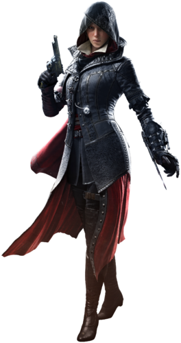

.
.
Evie was born four minutes before her brother Jacob. Due to their mother Cecily's death after childbirth, the twins were raised by their grandmother in Crawley until the age of six, after which they were trained by their father, Ethan Frye, in the ways of the Assassins. Evie relished in her father's lessons and specialized in planning and research on the Brotherhood, and the Pieces of Eden, unlike the carefree Jacob.In her teenage years, Evie used her skills to spy upon Ethan and his father's friend George Westhouse's conversations about the Brotherhood and would relay this information to her brother.The twins arrived in Whitechapel and decided to seek out the Assassin leader Henry Green who apprised them on the Templar control over London. Evie contradicted her brother's proposal in creating a gang called the Rooks to challenge the Blighters, instead suggesting to recover Pieces of Eden. The trio bumped into the writer Charles Dickens and Blighters thugs. Evie joined her brother in driving a carriage to distract them in chasing Henry, destroying Blighters' carriages in the process. Returning to Henry's shop, the Assassins discussed their contacts within the city.They later met with a disguised Frederick Abberline, the Chief of Metropolitan Police Service in a back alley. Abberline gave them a list of notable Blighters members whom they kidnapped. Following this, Evie and Jacob contacted their young ally Clara O'Dea in Babylon Alley for information in exchange for freeing children from labor in the factories. After eliminating the rest of the Blighters and their leader Rexford Kaylock's control of Whitechapel, the duo formed the Rooks.The Assassins took ownership of the former Blighters train, making it their hideout, and allied with Agnes MacBean who provided her financial services. Jacob and Evie further traveled to Southwark to meet Alexander Graham Bell, Henry Green's associate, to fix the broken rope launcher and attach it to their Hidden Blade bracers.